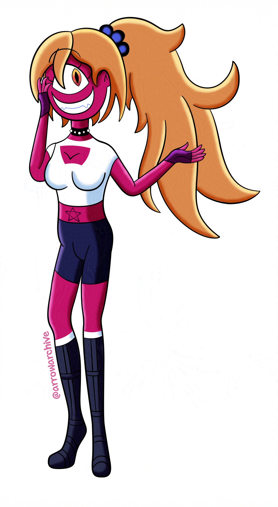

Introducing: Molo
I decided to challenge myself when it comes to character design; instead of drawing a character with two eyes, I tried drawing a character with one. It was harder than it looked, especially since she started looking like Cherri Bomb from Hazbin Hotel halfway through designing her and I wasn’t sure what to think.
Doubts aside, I like how she looks. I was originally gonna draw her wearing a disheveled kimono, but I’ve drawn a lot of characters wearing kimonos and I wanted to show her full outfit, so I did this first. Her kimono will be similar to Ember’s, but it’ll be dark red with an orange obi and flame designs on the sleeves.
My last note on Molo surrounds the little things; she’s the second character who wears fingerless gloves, her ears are pointy (which are not visible because of her hair), and her star is tattooed onto her chest instead of being printed onto her clothes or an accessory. I want to keep experimenting with her design and hopefully I can make her more distinct.